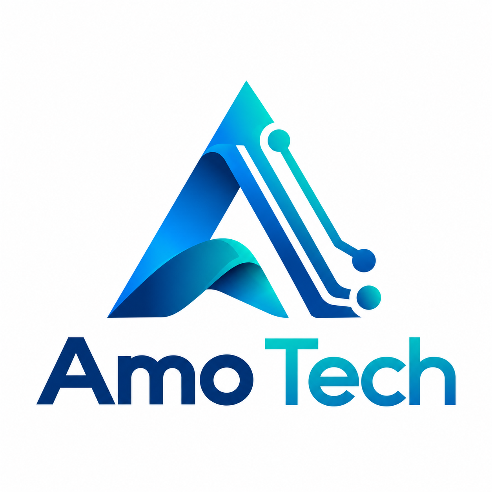

Software & Web
Development
Business websites, web applications and tailored systems that turn complex requirements into clear, useful experiences.
- Company & product websites
- Business applications & portals
- System integrations

AMOTECHADVANCED MODERN OPERATIONSTECHNOLOGY WITH PURPOSE
From your next idea to your next chapter. AMO TECH brings technology, design and modern operations together to move your business forward.
Advanced thinking.
Practical solutions.
01 / WHAT WE DO
Practical technology, thoughtfully designed.
Explore a starting point for your next project.
Business websites, web applications and tailored systems that turn complex requirements into clear, useful experiences.
Connect what your business needs with what your users need, from the first sketch to a consistent digital experience.
Make everyday work more connected through workflow planning, automation and a clear technology roadmap.
Service scope, delivery timelines and technology choices are agreed individually for each engagement.
02 / POSSIBILITIES IN PRACTICE
Explore illustrative project concepts.
Client case studies will be added as approved.
03 / MEET AMO TECH
AMO stands for Advanced Modern Operations. Our direction is simple: bring clear thinking and useful technology to real business challenges.
We believe a successful project starts with understanding the people, processes and goals behind it. That means asking the right questions, making informed choices and building with the next stage in mind.
PEOPLE MAKE THE DIFFERENCE
Great digital work brings different perspectives to the same table. Our delivery approach connects business understanding, design and engineering throughout a project.
Meet-the-team profiles are being prepared for publication.
04 / HOW WE WORK
Discuss your goals, users, current processes and the outcomes that matter.
Agree on scope, deliverables, technology, responsibilities and a practical timeline.
Develop in clear stages, share progress and test against the agreed requirements.
Prepare the handover and agree on support, maintenance and future improvements.
05 / THE RIGHT TOOLS
Technology should fit the problem. We consider maintainability, security, integration and your team’s needs before recommending a stack.
Web platforms · Responsive interfaces · Design systems
APIs & integrations · Databases · Automation
Cloud hosting · Version control · Testing & monitoring
A FEW USEFUL ANSWERS
A short description of your goals, the service you need, your preferred timeline and any existing materials is enough to begin. A detailed specification can be developed during discovery.
Yes. A focused initial scope can help establish the essentials and create a clear foundation for future phases. The first release and later improvements should be agreed in the proposal.
They depend on the scope, complexity, integrations, content readiness and review process. A project-specific proposal should confirm deliverables, assumptions, milestones and commercial terms.
Handover, documentation, maintenance and support should be defined as part of the engagement. Ongoing services and response times are agreed separately.
LET’S BUILD WHAT’S NEXT
Have an idea, a challenge or a project in mind?
Prepare a brief and let’s give it direction.
Company contact details are being finalized.
For now, download your brief and share it with your AMO TECH representative.